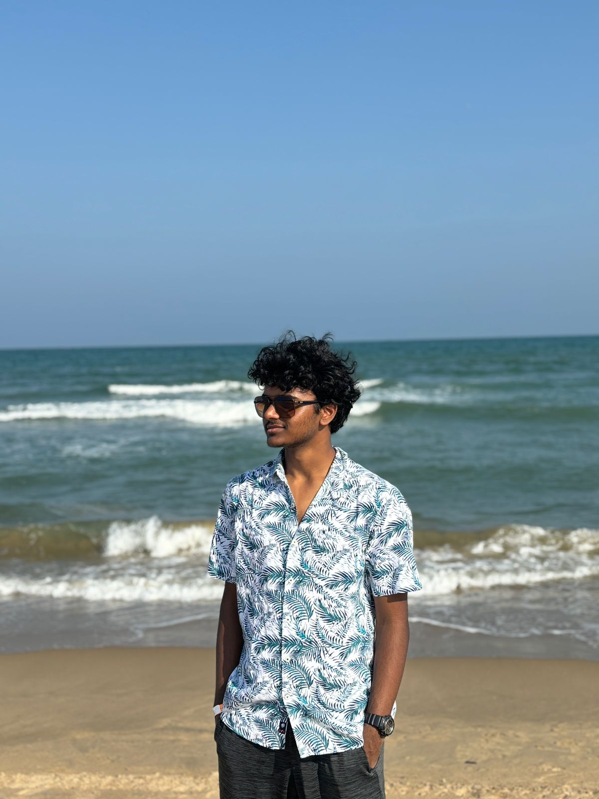

 I am a dedicated second-year Computer Science student specializing in Data Science at VIT Vellore University. My academic journey has been focused on building a strong foundation in computational thinking, and I am actively working on enhancing my coding skills to bring my ideas to life. I am passionate about exploring the intersection of technology and data, and I believe that data-driven insights have the potential to solve complex real-world problems.
Beyond academics, I have a deep interest in gaming, which has honed my problem-solving abilities, strategic thinking, and teamwork skills. Gaming isn't just a hobby for me—it's a way to challenge my mind and stay sharp. I find that the logical reasoning and quick decision-making required in games often mirror the challenges I encounter in programming and data analysis.
Currently, I am focused on improving my coding skills and expanding my knowledge in data science tools and technologies. Every line of code I write brings me closer to building meaningful projects and contributing to the tech community. I believe in continuous learning and strive to stay curious, motivated, and open to new opportunities for growth and collaboration.